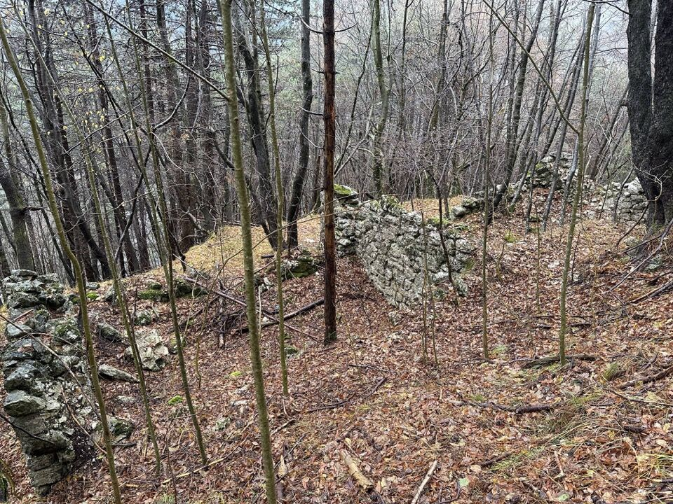
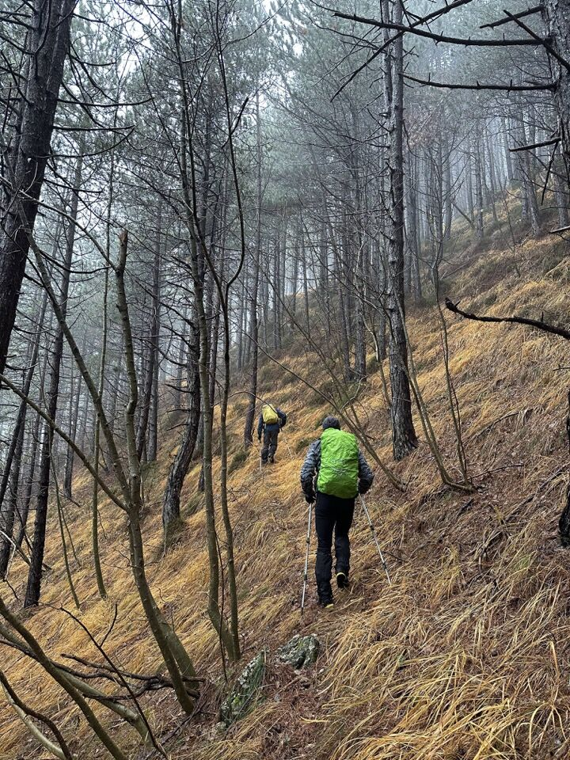
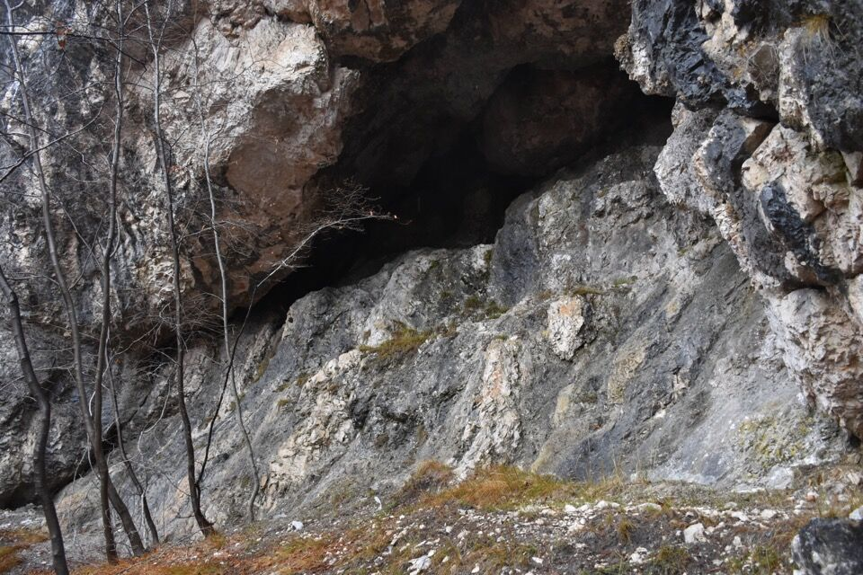
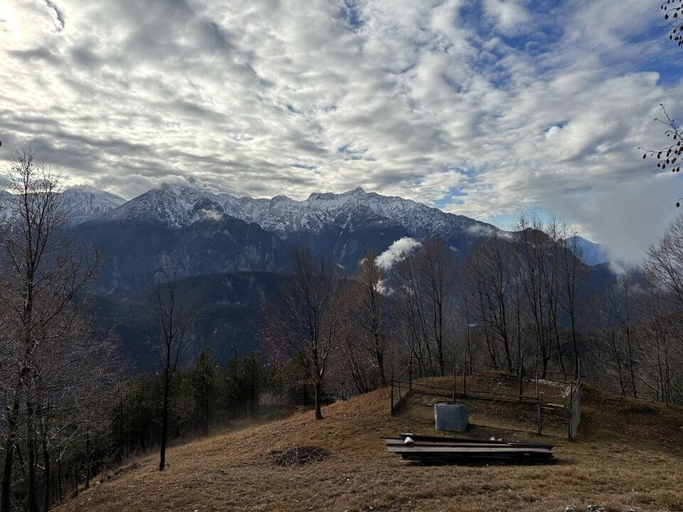
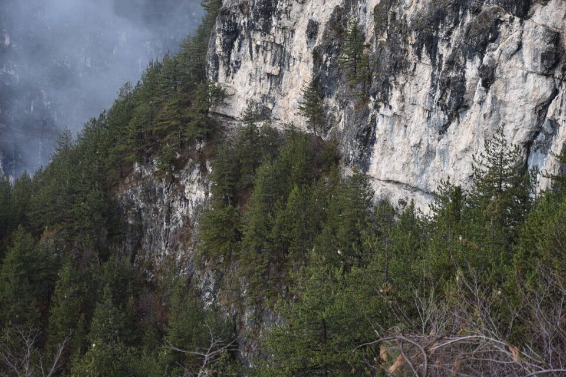
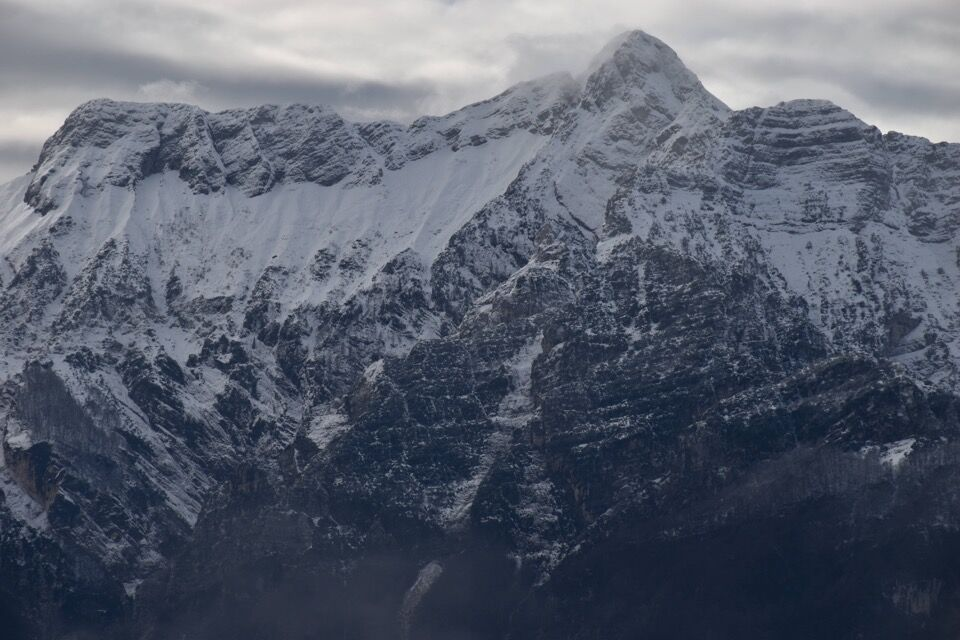

Mi attirava il sentiero tratteggiato in nero sulla Tabacco, sul versante Ovest del Belepéit Padovàn. In effetti, perlomeno nella parte bassa, sì è rivelato un bellissimo sentiero ancora ben marcato, che sfrutta le cenge naturali del monte per salire ai boschi superiori.
Dovrete perdonarmi per le pessime foto fate con il vecchio telefono.
Si va su per il riu di Cueste Spiçade, che da lontano caratterizza il monte (vedi la foto di introduzione di questa pagina).
Una rampa porta su una sottile crestina con pini, che non ho fotografato ma che ho ancora ben impresso nella memoria per quanto pittoresco fosse il passaggio.
Come dicevo, la prima parte è davvero apprezzabile. Non mancano vestigia del passato come un muretto a secco ancora in ottime condizioni.
Verso il riu di Cueste Spiçade.
Arriviamo agli stâli dal Laurinç, posto incredibile.
Peccato che dopo poco sparisca ogni traccia di passaggio.
Arriviamo al cret con strapiombi ben visibile dal Pisimoni.
Di là una pala di faggi (proprio qui il dizionario toponomastico di Sclûse riporta pale dal Manç (?)) per dove volevo passare... ma si decide di proseguire l'aggiramento del monte in versante Ovest... per poi ad un certo punto, se non ricordo male arrivati al pianoro del Plan dal Sdroi, prima del riu di Cueste Blâs (che è quel profondo rio che scende dalla cima verso Nord-Ovest), tirare su dret par dret verso la cima.
Chiaramente scendiamo a visitare lo stâli di Belepéit Padovàn.
La cengia di collegamento lo stâli di Belepéit Padovàn e il sentiero del versante Ovest.
Il versante Nord del Plauris, con la cresta detta Col Mat sovrastante i ripidissimi slips. L'occhio attento riconosce il Palòn dei Zábus e Punta Salvotis.
Tempo beffardo!